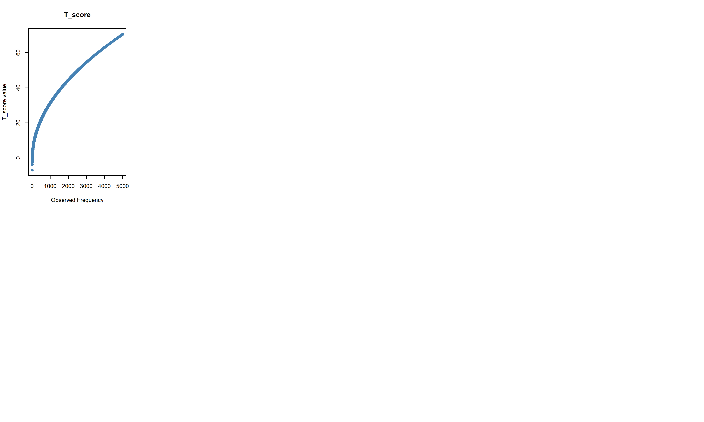
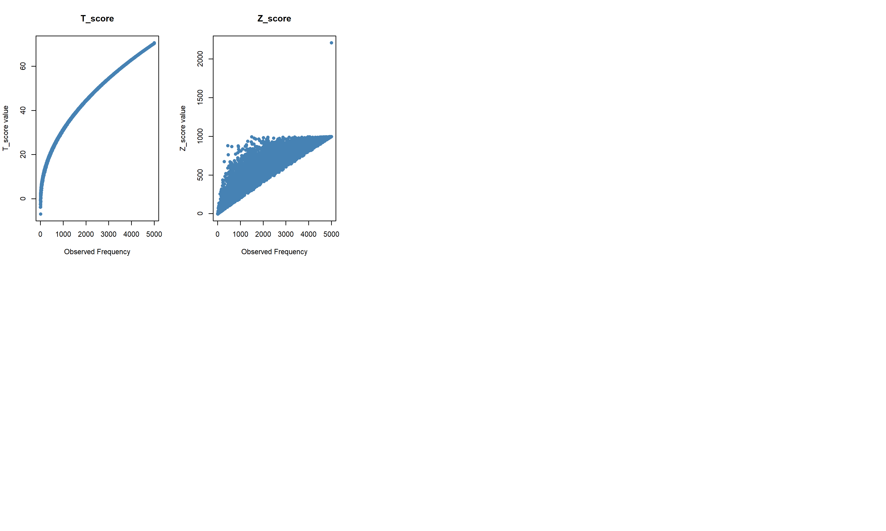
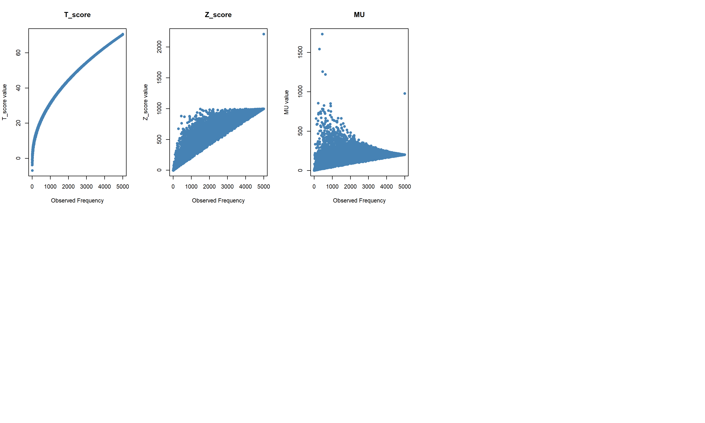
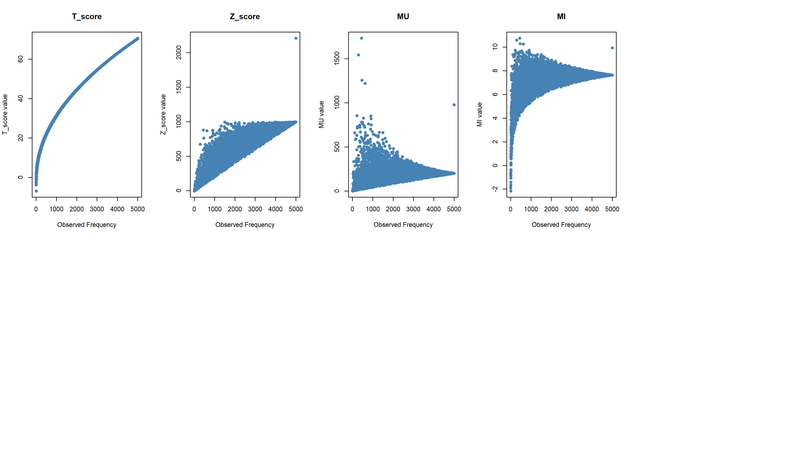
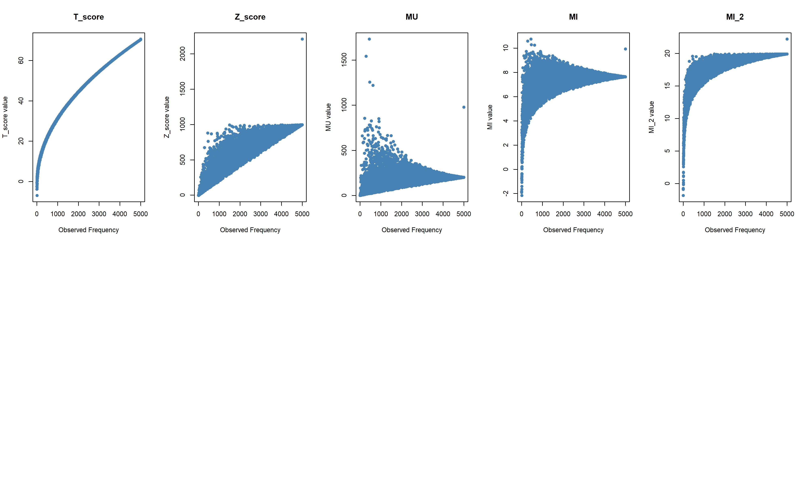
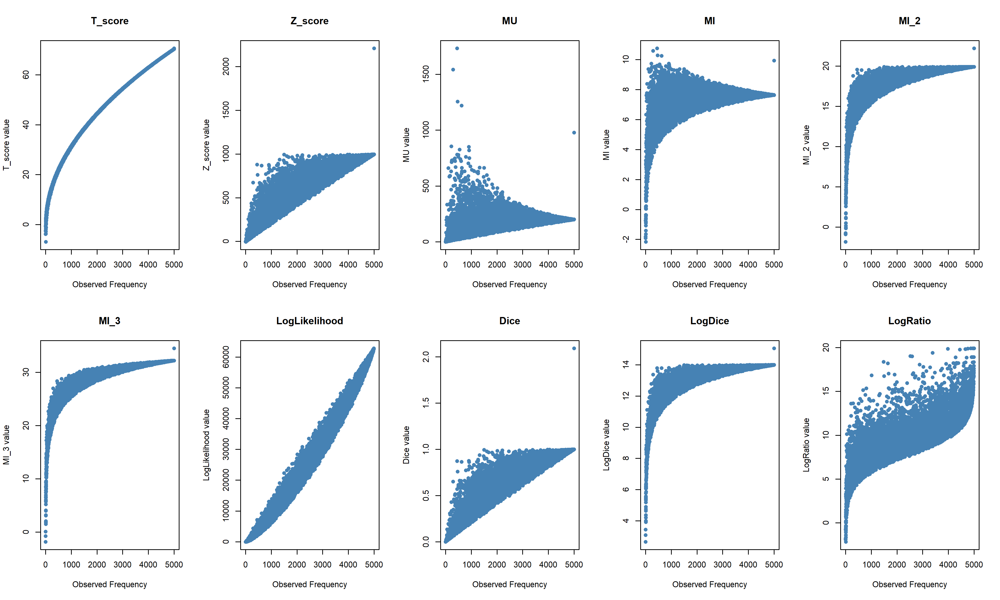
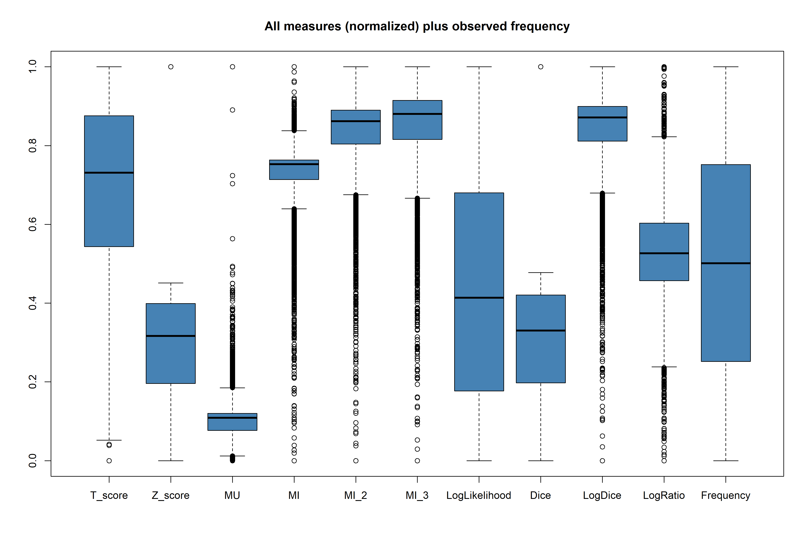

[1] 109Corpus Linguistics Research Group
Lancaster University
20 May 2026
Goals
Assumptions
Reproducibility: Sönning & Werner (2021), Schweinberger (2026),
How “sensitive” are common measures towards pure collocation frequency?






Extending the simulation from t-score to other popular measures, we can observe that
Normalized between 0 and 1 for all measures.

This is small text
This is small text
For this exercise, we will work with the poem ‘A red, red rose’ by Robert Burns (Brezina (2018), Chapter 3)
My love is like a red, red rose that’s newly sprung in June: My love is like the melody
that’s sweetly played in tune. As fair art thou, my bonnie lass, so deep in love am I:
And I will love thee still, my dear, till a’ the seas gang dry. Till a’ the seas gang dry, my
dear, and the rocks melt wi’ the sun : And I will love thee still, my dear, while the sands
o’ life shall run. And fare thee weel, my only love, and fare thee weel a while! And I
will come again, my love, thou’it were ten thousand mile.
We read the text into a string variable:
poem <-
"My love is like a red, red rose that's newly sprung in June:
My love is like the melody that's sweetly played in tune.
As fair art thou, my bonnie lass, so deep in love am I:
And I will love thee still, my dear, till a' the seas gang dry.
Till a' the seas gang dry, my dear, and the rocks melt wi' the sun :
And I will love thee still, my dear, while the sands o' life shall run.
And fare thee weel, my only love, and fare thee weel a while!
And I will come again, my love, thou' it were ten thousand mile."To tokenize the poem, we use the Penn Treebank word tokenizer from the tokenizers package (Mullen et al., 2018). Before we can use the respecting function, we have to download the package using install.packages("tokenizers") and import it into our R session.
To tokenize the poem, we use the Penn Treebank word tokenizer from the tokenizers package (Mullen et al., 2018). Before we can use the respecting function, we have to download the package using install.packages("tokenizers") and import it into our R session.
[1] "My" "love" "is" "like" "a" "red" "," "red" "rose" "that"
[11] "'s" "newly" "sprung" "in" "June" ":" "My" "love" "is" "like"
[21] "the" "melody" "that" "'s" "sweetly" "played" "in" "tune." "As" "fair"
[31] "art" "thou" "," "my" "bonnie" "lass" "," "so" "deep" "in"
[41] "love" "am" "I" ":" "And" "I" "will" "love" "thee" "still"
[51] "," "my" "dear" "," "till" "a" "'" "the" "seas" "gang"
[61] "dry." "Till" "a" "'" "the" "seas" "gang" "dry" "," "my"
[71] "dear" "," "and" "the" "rocks" "melt" "wi" "'" "the" "sun"
[81] ":" "And" "I" "will" "love" "thee" "still" "," "my" "dear"
[91] "," "while" "the" "sands" "o" "'" "life" "shall" "run." "And"
[101] "fare" "thee" "weel" "," "my" "only" "love" "," "and" "fare"
[111] "thee" "weel" "a" "while" "!" "And" "I" "will" "come" "again"
[121] "," "my" "love" "," "thou" "'" "it" "were" "ten" "thousand"
[131] "mile" "."
As a next step, some further cleanup is necessary. The code used to do this can be found in the appendix Section 9.3.
After running the steps outlined in Section 9.3, we are getting the below results.
This clean text vector will be the basis for our following analysis.
[1] "my" "love" "is" "like" "a" "red" "red" "rose" "that" "is"
[11] "newly" "sprung" "in" "june" "my" "love" "is" "like" "the" "melody"
[21] "that" "is" "sweetly" "played" "in" "tune" "as" "fair" "art" "thou"
[31] "my" "bonnie" "lass" "so" "deep" "in" "love" "am" "i" "and"
[41] "i" "will" "love" "thee" "still" "my" "dear" "till" "a" "the"
[51] "seas" "gang" "dry" "till" "a" "the" "seas" "gang" "dry" "my"
[61] "dear" "and" "the" "rocks" "melt" "wi" "the" "sun" "and" "i"
[71] "will" "love" "thee" "still" "my" "dear" "while" "the" "sands" "o"
[81] "life" "shall" "run" "and" "fare" "thee" "weel" "my" "only" "love"
[91] "and" "fare" "thee" "weel" "a" "while" "and" "i" "will" "come"
[101] "again" "my" "love" "thou" "it" "were" "ten" "thousand" "mile" Points to Consider
To construct the full set of data in the two tables, we have 14 values to consider.
| Collocate present (my) | Collocate absent | Totals | |
|---|---|---|---|
| Node present (love) | \(O_{11}\) | \(O_{12}\) | \(R_1\) |
| Node absent | \(O_{21}\) | \(O_{22}\) | \(R_2\) |
| Totals | \(C_1\) | \(C_2\) | \(N\) |
| Collocate present (my) | Collocate absent | Totals | |
|---|---|---|---|
| Node present (love) | \(E_{11} = \frac{R_1 \times C_1}{N}\) | \(E_{12} = \frac{R_1 \times C_2}{N}\) | \(R_1 \times w\) |
| Node absent | \(E_{21} = \frac{R_2 \times C_1}{N}\) | \(E_{22} = \frac{R_2 \times C_2}{N}\) | \(R_2\) |
| Totals | \(C_1\) | \(C_2\) | \(N\) |
It looks like a lot to calculate. Lucily, only need the following 5 values:
To construct the full set of data in the two tables, we have 14 values to consider.
| Collocate present (my) | Collocate absent | Totals | |
|---|---|---|---|
| Node present (love) | \(O_{11}\) | \(O_{12} = R_1 - O_{11}\) | \(R_1\) |
| Node absent | \(O_{21} = C_1 - O_{11}\) | \(O_{22} = R_2 - O_{21}\) | \(R_2 = N - R_1\) |
| Totals | \(C_1\) | \(C_2 = N - C_1\) | \(N\) |
| Collocate present (my) | Collocate absent | Totals | |
|---|---|---|---|
| Node present (love) | \(E_{11} = \frac{R_1 \times C_1}{N}\) | \(E_{12} = \frac{R_1 \times C_2}{N}\) | \(R_1\)\(\times w\) |
| Node absent | \(E_{21} = \frac{R_2 \times C_1}{N}\) | \(E_{22} = \frac{R_2 \times C_2}{N}\) | \(R_2\) |
| Totals | \(C_1\) | \(C_2\) | \(N\) |
In other words, we do have to determine
Most of the values we need can be calculated straightforward from the token vector we have created earlier.
The Number of tokens in the whole corpus, \(N\), equals the number of elements in our vector, which can be derived using the length() function:
For the frequency of the node (\(R_1\)), we can ask which token is equal to the node, using the expression poem_tokens == "love". Note that == means “equal to” in many programming languages - like a single = in maths. This gives us a logical vecor of TRUE and FALSE’s. Since TRUE corresponds to 1 and FALSE to 0, we can simply sum it up and have the result we need:
Likewise for the collocate of interest, \(C_1\):
The window size is our choice and depends on the research question.
For determining the collocation, we need to count - or better make the computer count - not just a sum, but what positional values the node and its collocate has. Usually we want to identify all collocates of our node of interest and how often they occur in our text (corpus).
First, we need to find the positions of our node. We can do so with the function which(). It returns a numeric vector of the node positions in the token vector
Since we decided for a \(L_1\)/\(R_1\) window, we can take the above vector add and subtract 1, respectively, to determine the positions of the co-occurrences:
Having the numerical values of the collocate positions in the text vector, we can use this as a filter to retrieve the tokens of interest:
[1] "my" "my" "in" "will" "will" "only" "my" "is" "is" "am"
[11] "thee" "thee" "and" "thou"To summarize this, we apply the table() function:
To extract only the numerical value of our collocate of interest, we subset this table using double brackets ([[]]):
There are some instances which require special treatment
1-to-1 relationship of node and collocate:
| Collocate present | Collocate absent | Totals | |
|---|---|---|---|
| Node present | 1 | \(O_{12}\) | \(R_1\) |
| Node absent | 0 | \(O_{22}\) | \(R_2\) |
| Totals | 1 | \(C_2\) | \(N\) |
Division by zero
\[LogRatio = \log_{2} \frac{O_{11} \times R_1}{O_{21} \times R_2} = \log_{2} \frac{1 \times R_1}{0 \times R_2}\]
Log of zero
Part of LL formula - Log of zero is undefined
\[O_{21} \times \ln(\frac{O_{21}}{E_{21}}) = 0 \times \ln(\frac{0}{E_{21}}) \]
A sentence with an epizeuxis like:
“There are three things that matter in property: location, location, location.”
— Attributed to Lord Harold Samuel (1944)
Produces a self-collocation table as below:
| Collocate present | Collocate absent | Totals | |
|---|---|---|---|
| Node present | 4 | 1 | 5 |
| Node absent | -1 | \(O_{22}\) | \(R_2\) |
| Totals | 3 | \(C_2\) | \(N\) |
A sentence with an epistrophe like:
We want to build growth, significant growth, sustainable growth, rooted in our core capabilities.
returns the following \(L_1\)/\(R_1\) constructs:
build growth significant
significant growth sustainable
sustainable growth rooted
Which results in the following values for the collocate sustainable:
| Collocate present | Collocate absent | Totals | |
|---|---|---|---|
| Node present | 2 | \(O_{12}\) | 3 |
| Node absent | -1 | \(O_{22}\) | \(R_2\) |
| Totals | 1 | \(C_2\) | \(N\) |
Bla Bla Bla
Please feel free to reach out to me if you have any questions.
Also, I appreciate any comments and suggestions regarding this material or Corpus Linguistics in general.
Starting point of your learning journey in statistics and R for Corpus linguistics should be Brezina (2018). This book will give you a solid overview about statistical concepts used in the field. Especially on Collocations, see also Brezina et al. (2015).
Also, the work of Stefan Gries in recommended, in particular Gries (2016), which is a good hands-on introduction into R and its application to case studies. With a broader focus on linear and mixed models, Gries (2021). Both give a solid and ridgid introduction into working with R in (Corpus) Linguistics.
The Practical Handbook of Corpus Linguistics Paquot & Gries (2020) offers an overview on many aspects in Corpus Linguistics research, from corpus compilation to writing a research report. Part II focuses on Corpus methods (with Chapter 7 on Co-occurrence Data, like Collocations Gries & Durrant (2020)) and Part IV on technical aspects, like programming with R.
There are many other introductions to be considered, for example Bodo Winter Winter (2019). He gives an introduction based on the tydiverse dialect of R (other than Gries, who sticks to base R) before diving into linear models and inferrential statistics. Slightly earlier work of Guillaume Desagulier Desagulier (2017) but likewise a good introduction to the topic.
Evert’s MU (Evert (2004))
\(MU = \frac{O_{11}}{E_{11}}\)
(pointwise) Mutual Information
\(MI = \log_{2}{\frac{O_{11}}{E_{11}}}\)
MI2
\(MI = \log_{2}{\frac{O_{11}^2}{E_{11}}}\)
MI3
\(MI = \log_{2}{\frac{O_{11}^3}{E_{11}}}\)
# Step 1: Concatenate the vector into a single string
poem_string <- paste(poem_tokenized, collapse = " ")
# Step 2: Replace the token "'s" with "is"
poem_string <- gsub("'s\\b", " is ", poem_string)
# Step 3: Remove all punctuation
poem_string <- gsub("[[:punct:]]", "", poem_string)
# Step 4: make all words lowercase
poem_string <- tolower(poem_string)
# Step 5: Split the cleaned string back into a vector of words
# on any white space character as delimiter
poem_tokens <- strsplit(poem_string, "\\s+")[[1]]